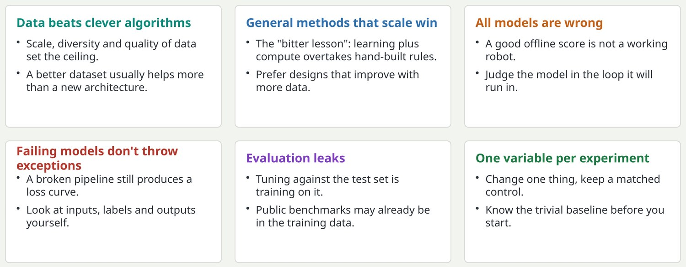
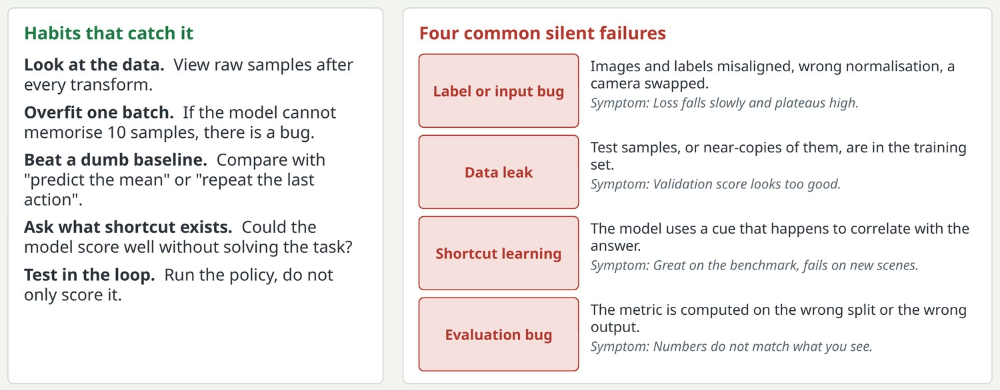

Six principles that outlast any model
The rest of the deck is detail; these are the habits that decide whether a project works.

These six carry over from the original deck, updated for scale. Data: the biggest gains in robotics recently came from more and more varied data. Bitter lesson: Rich Sutton's observation that methods which leverage compute and data beat methods that encode human knowledge. Evaluation leaks: every time you pick a hyperparameter using the test set, a little of the test set leaks into the model.
Key pointWhen a result surprises you, come back to this slide before changing the model.
Silent failure: what it looks like and how to catch it
Nothing crashes, the loss goes down, and the model has still learned the wrong thing.

The key point for junior engineers: deep learning code fails quietly. A classic example of shortcut learning is a classifier that learns the background instead of the object. In robotics, a policy can learn to copy its previous action from the proprioception input and look fine offline.
Key pointA falling loss proves the code runs. It does not prove the model learned what you intended.